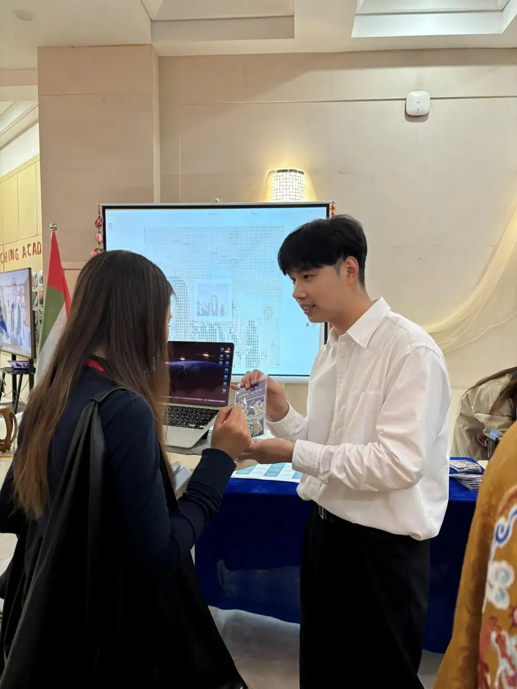

Language Across Borders (LAB) is a global event series connecting native and non-native speakers of Chinese and Arabic across regions — a growing collective of young professionals and scholars, fascinated by both languages and motivated to become the future leaders of cross-cultural dialogue and diplomacy.
Our mission is to promote linguistic diversity — building a global community that welcomes all nationalities, backgrounds, and levels, and documenting their stories through Chinese and Arabic.
Two tracks, one room — Chinese Without Borders 无界中文 and Arabic Without Borders اللغة العربية بلا حدود: non-native speakers share the journey in the language they are learning, every dialect welcome.
One word in Chinese, Arabic, and English opens every session and sets the theme.
Scholars and professionals working across China and the Arab world, or in the two languages.
A panel-style talk first, then the mic opens to the room.
Every session runs offline and on Zoom at once — geography never decides who's in the room.
Networking Bingo, Kahoot, culinary culture — beginner-friendly ways in, at every level.
Click to listen — our founder Gloria Tsang takes you through our first LAB session, in 90 seconds, from Al Maqam Cafe in Jeddah. It plays right here in the phone.
Learners, heritage speakers, professors, creators — the voices who've taken the LAB mic.
The Mandarinizer is an interactive camera app that turns a photograph into a pixel portrait composed of Chinese characters. Built by the I Got One 字圆其说 project — a crowdsourced platform reimagining Chinese characters, led by Professor Jing Chai — it debuted with SGYN at the Yenching Global Symposium and has since traveled with LAB to Dammam and Singapore.
The Mandarinizer anchors the LAB Booth — SGYN's interactive pop-up at large-scale events, which debuted at the Yenching Global Symposium at Peking University in April 2026.
In partnership with I Got One 字圆其说

LAB left the screen in January and hasn't stopped moving since — a roundtable that packs into a suitcase and unpacks wherever two languages are curious about each other.
Skip the journeyFrom foreign-affairs offices to neighborhood cafes, LAB runs on partners. Collaboration takes many shapes — sponsorship, venues, marketing, event planning, staff support, talent outreach — almost always value-exchange, always non-profit.